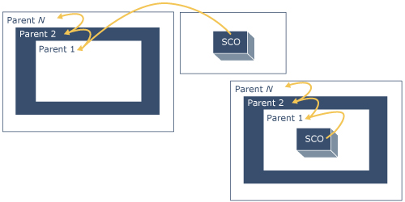

SCO Responsibilities

In order for a SCO to begin tracking a learner's experience with a LMS, the SCO must be able to find the LMS provided API Instance. Since the content objects, in the SCORM environment, are launched in Web browsers, the Web browsers provide a DOM in which to place an API Instance. The DOM can be considered a defined structure or organization of the objects in a page. In order for SCOs to find the API Instance from one LMS to another, the IEEE standard has placed restrictions on where the API Instance can be placed in this hierarchy.